Cartas aprobadas
El catálogo registra las ilustraciones aprobadas del mazo base el 14 de noviembre de 2026.
Buscar en las fichas aprobadas

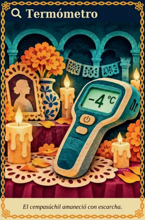

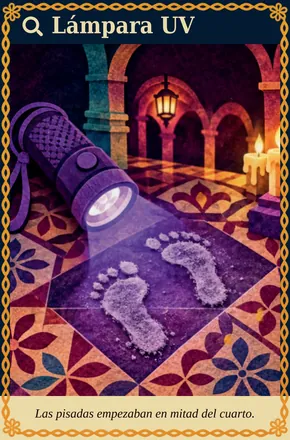


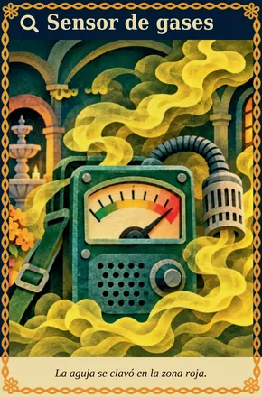

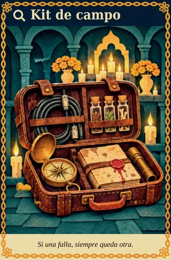


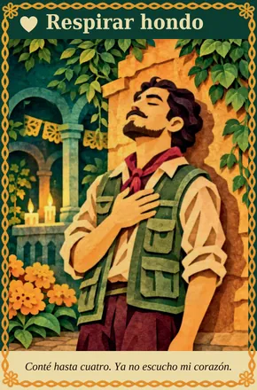


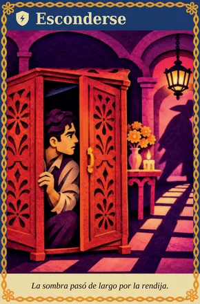

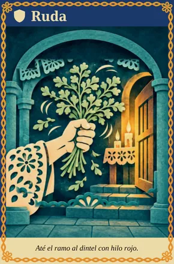

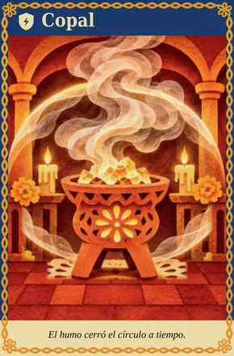


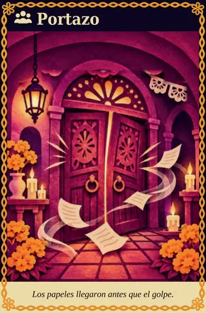


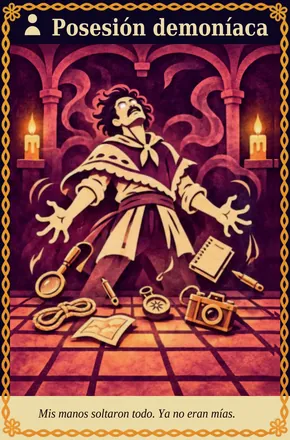

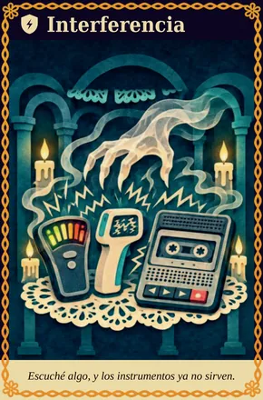

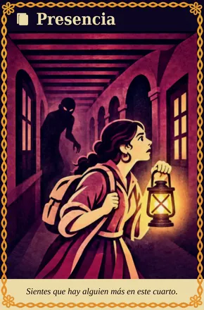


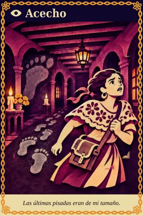

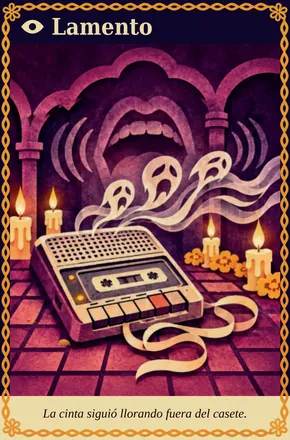


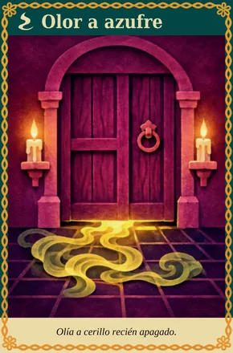

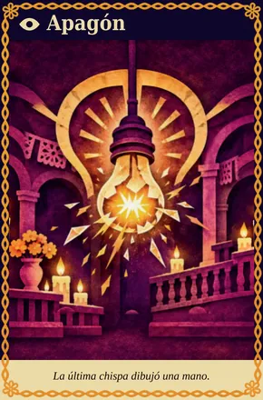

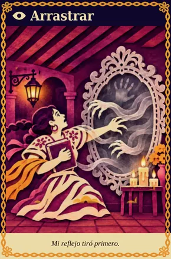

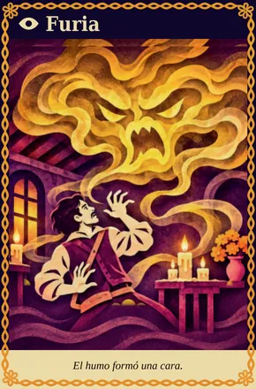


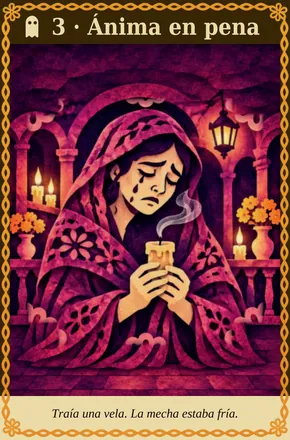


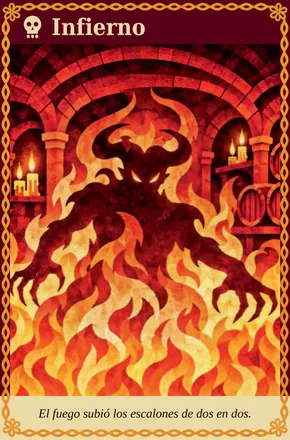


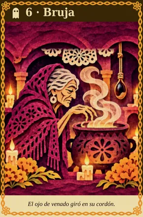

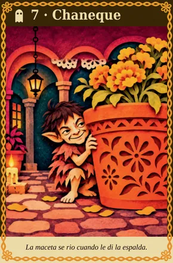


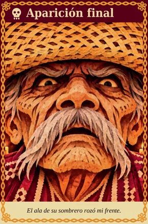


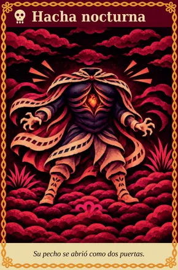

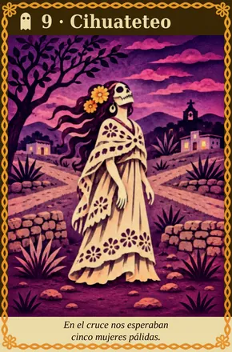

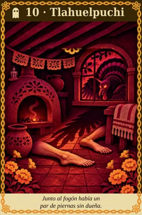


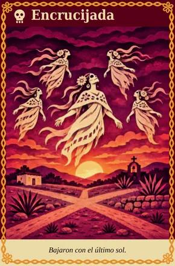


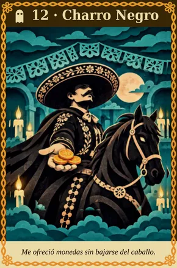

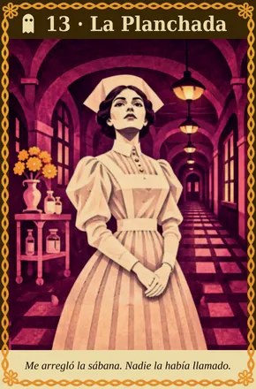


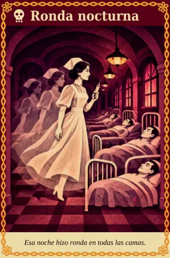


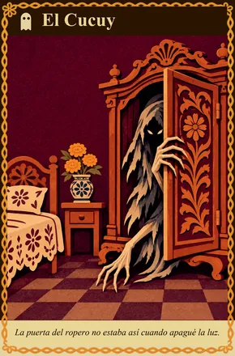


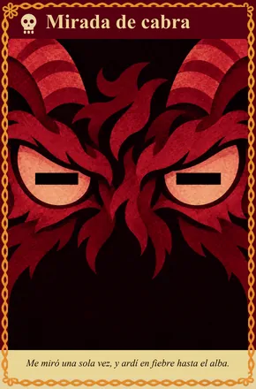


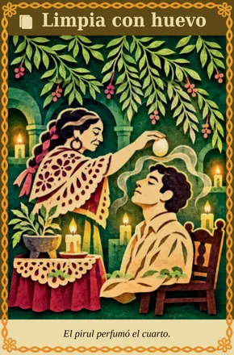

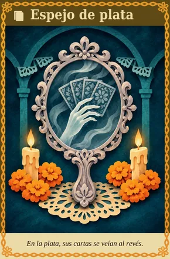

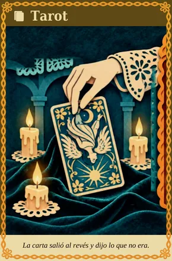


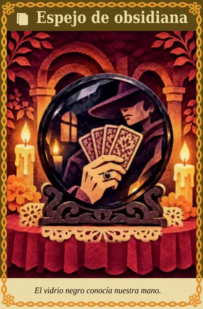


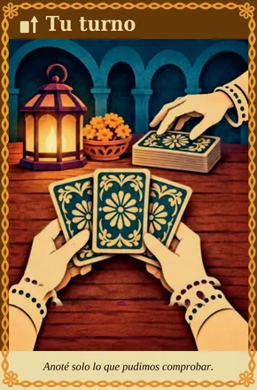


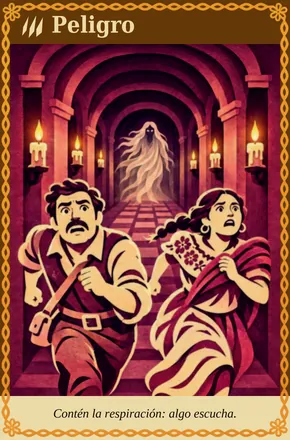

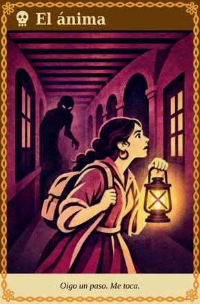

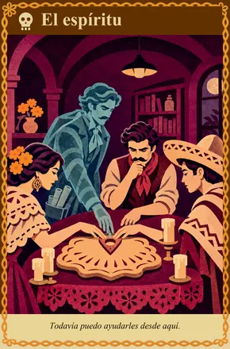


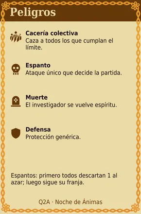

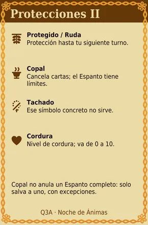

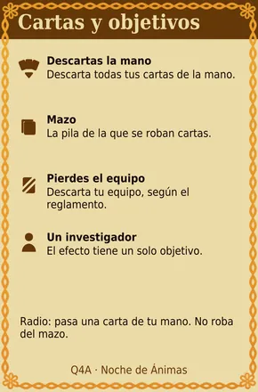

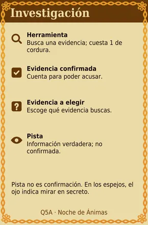